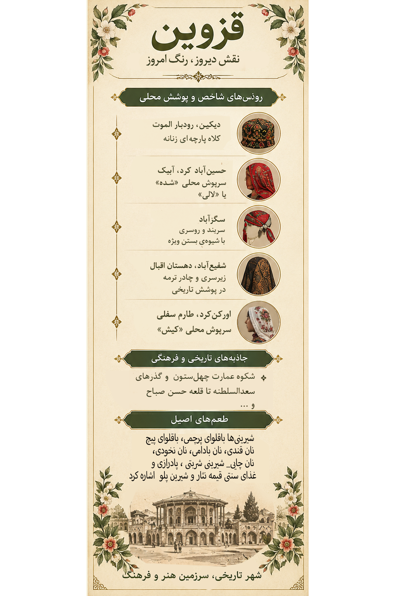

دیکین و رودبار الموت
در لیبل این مجموعه، به کلاه پارچهای زنانه در دیکین، از روستاهای ناحیه الموت، اشاره شده است. کلاه و پوشش سر در پوشاک محلی میتوانست بخشی از هویت منطقهای و شیوه آراستن زنان باشد.
«قزوین؛ نقشِ تاریخ بر تار و پودِ زندگی»
سفری تصویری میان پوشش زنان، روستاهای کهن، بناهای تاریخی، طبیعت و طعمهای بهیادماندنی سرزمین قزوین
در این اثر، پوشش گلدار زنان، معماری تاریخی، نقشمایههای کاشی، خوراکهای محلی و طبیعت کوهستانی در کنار هم قرار گرفتهاند؛ عناصری که هرکدام بخشی از حافظه فرهنگی قزوین را روایت میکنند.

اثر تصویری قزوین از مجموعه «ایران، هزار رنگ»
این تصویر، اثر هنری مجموعه است؛ تصاویر و توضیحات این صفحه برای معرفی فرهنگی و تاریخی استان ارائه شدهاند.
پوشاک سنتی زنان قزوین یک لباس یکسان برای همه منطقه نیست. شکل پوشش با توجه به روستا، شیوه زندگی، زبان و سنتهای محلی تفاوت داشته است. روسریها، سربندها، کلاههای پارچهای، پارچههای نقشدار و شیوههای بستن آنها از جزئیات مهم این میراث فرهنگیاند. برخی از این شیوهها امروزه بیشتر در عکسها، روایتهای محلی و پژوهشهای مردمشناختی دیده میشوند.

لیبل اختصاصی قزوین؛ راهنمای تصویری پوشش، جاذبهها و خوراک محلی
در لیبل این مجموعه، به کلاه پارچهای زنانه در دیکین، از روستاهای ناحیه الموت، اشاره شده است. کلاه و پوشش سر در پوشاک محلی میتوانست بخشی از هویت منطقهای و شیوه آراستن زنان باشد.
در معرفی پوشش این روستا از سربند محلی «شده» یا «لالی» نام برده شده است. «لالی» در منابع مربوط به پوشاک سنتی قزوین نیز بهعنوان نوعی روسری محلی ثبت شده؛ شکل بستن و رنگ پارچه میتوانسته در تشخیص شیوه پوشش نقش داشته باشد.
لیبل به شیوه ویژه بستن سربند و روسری در سگزآباد اشاره میکند. در پوشاک سنتی منطقه، جنس پارچه، اندازه روسری، رنگ و نحوه مهار آن در زیر چانه از جزئیات قابل توجه بودهاند.
در لیبل، از زیرسری و چادر ترمه در روایت پوشش تاریخی این محدوده نام برده شده است. زیرسریها با شیوههای متفاوت گرهزدن یا قراردادن پارچه روی سر استفاده میشدند.
در لیبل مجموعه به روسری محلی «کیش» اشاره شده است. نامها و شیوههای محلی پوشش بخشی از دانش بومیاند و ثبت دقیق آنها با کمک روایت زنان و خانوادههای همان روستاها میتواند به حفظ این میراث کمک کند.
گلدار بودن پارچه، رنگهای زنده، روسریهای نقشدار، سربندها و ترکیب چند لایه پوشش، ظرفیت بصری مهمی برای بازنمایی لباس محلی دارند. بااینحال، یک نقش یا رنگ بهتنهایی نماینده پوشش همه زنان قزوین نیست.
اهمیت این پوششها تنها در ظاهر آنها نیست؛ هر شیوه بستن روسری یا انتخاب پارچه میتواند به مهارتهای دوخت، دسترسی به مواد اولیه، اقلیم، آداب خانوادگی و خاطره نسلهای پیشین پیوند داشته باشد.
یادداشت پژوهشی: نامها و نسبتهای روستایی این بخش بر اساس لیبل اختصاصی مجموعه و اطلاعات منتشرشده درباره پوشاک سنتی قزوین تنظیم شدهاند. برای انتشار نهایی نمایشگاهی، بهتر است تلفظ محلی و جزئیات هر پوشش با افراد آگاه همان منطقه تطبیق داده شود.
هویت قزوین فقط در مرکز تاریخی آن خلاصه نمیشود. روستاهای کوهستانی الموت، آبادیهای طارم سفلی، روستاهای تاکستان و دشتهای بویینزهرا هرکدام چشمانداز، گویش، شیوه زندگی و محصولات ویژه خود را دارند.
دیکین، گازرخان، اندج، هیر، گازرخان و روستاهای پیرامون الموت را میتوان در روایت روستایی این ناحیه بررسی کرد. چشمانداز کوهستانی، درهها، باغها و آثار تاریخی، بهویژه در محدوده قلعه الموت، از ویژگیهای شناختهشده این منطقهاند.
اورکنکرد، اورکنترک، سیاهپوش، کلج، شیزر، سنگان سفلی، سنگان علیا، عمادده و آبادیهای پیرامون سیردان از نامهایی هستند که در معرفی این منطقه میتوان بررسی کرد. باغداری، بهویژه زیتون در بخشهایی از طارم سفلی، از ظرفیتهای اقتصادی و فرهنگی منطقه است.
تاکستان و آبادیهای اطراف آن با باغهای انگور و پیشینه کشاورزی شناخته میشوند. نیکویه، خرمآباد، کندر و اورازجین از نامهایی هستند که در بررسی روستاهای این محدوده میتوان به آنها پرداخت.
سگزآباد، رودک، شال، دشتک، خیارج و روستاهای پیرامون بویینزهرا بخشی از جغرافیای متنوع جنوب استاناند. دشتها، فعالیتهای کشاورزی و محوطههای باستانی از موضوعات مناسب برای معرفی این محدوده هستند.
حسینآباد کرد و دیگر آبادیهای منطقه آبیک میتوانند در روایت پوشش و زندگی روستایی استان جای بگیرند. پیوند میان کشاورزی، رفتوآمد میان روستا و شهر و سنتهای محلی، بخشی از داستان این ناحیه است.
شعیبآباد، شینقر، چوبیندر، رشتقون و آبادیهای دهستانهای اقبال و قاقازان، نمونههایی از گستردگی سکونتگاههای روستایی استان هستند. روایت دقیق هر روستا باید با ویژگیهای تاریخی و فرهنگی خودش تکمیل شود.
فهرست بالا نمونهای برای شروع پژوهش است، نه فهرست کامل روستاهای استان. نام روستاها و نسبت آنها با شهرستان یا دهستان باید پیش از چاپ نهایی از منبع معتبر کنترل شود.
عمارت چهلستون قزوین یادگاری از دوره صفوی و بخشی از مجموعه تاریخی باغ صفوی است. معماری بنا و تزئینات آن، داستان روزگاری را بازگو میکند که قزوین جایگاه مهمی در تاریخ سیاسی و فرهنگی ایران داشت.
مجموعه تاریخی سعدالسلطنه از مهمترین فضاهای تجاری تاریخی قزوین است. حیاطها، حجرهها، راهروها و فضاهای پیوسته آن، نمونهای از معماری بازار و کاروانسراهای شهری ایران به شمار میآیند.
قلعه الموت بر فراز ارتفاعات منطقه، یکی از شناختهشدهترین آثار تاریخی قزوین است. مسیرهای کوهستانی و چشماندازهای اطراف آن، تاریخ و طبیعت را در یک روایت به هم پیوند میدهند.
در کنار بناهای شهری، آبادیهای کوهستانی، باغها، درهها و چشماندازهای طارم و الموت نیز بخشی از میراث طبیعی و فرهنگی استاناند. هر منطقه را باید با توجه به شرایط جغرافیایی، تاریخ محلی و روایت ساکنان آن معرفی کرد.
خوراکهای محلی در کنار پوشاک و معماری، بخش مهمی از هویت فرهنگی قزویناند. شیرینیپزی سنتی این شهر شهرت زیادی دارد و غذاهای مجلسی نیز در مهمانیها و آیینهای خانوادگی جایگاه ویژهای دارند.
باقلوای قزوینی، نان قندی، نان بادامی، نان نخودی، نان چای و شیرینی پادرازی از نامهای شناختهشده در شیرینیپزی سنتی این شهر هستند.
قیمهنثار از غذاهای شاخص قزوین است که معمولاً با برنج، گوشت و تزئیناتی مانند خلالها و زرشک سرو میشود. این غذا در سفرههای مهمانی و مناسبتهای خاص جایگاه دارد.
شیرینپلو و دیگر غذاهای مجلسی بخشی از تنوع سفرههای قزوینی هستند. شیوه پخت و تزئین غذاها میتواند از خانوادهای به خانواده دیگر متفاوت باشد.
نام خوراکها از لیبل مجموعه و شناختهشدهترین نمونههای خوراک قزوینی گردآوری شده است. نامهای محلی و تفاوتهای دستور پخت را میتوان در نسخههای بعدی با کمک اهالی تکمیل کرد.
باغهای انگور و فرآوردههای آن از عناصر مهم کشاورزی و اقتصاد محلی تاکستاناند.
زیتون و باغداری در بخشهایی از طارم سفلی اهمیت دارند و با شرایط اقلیمی این ناحیه پیوند خوردهاند.
گردو از محصولاتی است که در روایت محلی ضیاءآباد به آن اشاره میشود؛ گستره تولید و جایگاه آن باید با اطلاعات محلی و کشاورزی تکمیل شود.
پسته از محصولاتی است که در معرفی ظرفیتهای کشاورزی بویینزهرا میتوان به آن پرداخت. نوع محصول و میزان تولید ممکن است از یک محدوده به محدوده دیگر متفاوت باشد.
برای شناخت دقیقتر تاریخ، روستاها و پوشاک سنتی قزوین، میتوان از منابع زیر آغاز کرد. در نسخه نهایی نمایشگاه، بهتر است منابع اختصاصی هر موضوع نیز به همین فهرست افزوده شوند.
این منابع نقطه شروع پژوهشاند؛ ذکر نام یک وبسایت به معنی تأیید تکتک جزئیات این صفحه از سوی آن وبسایت نیست. برای نسبتدادن یک نوع پوشش به روستایی مشخص، منبع تخصصی یا تأیید محلی جداگانه لازم است.